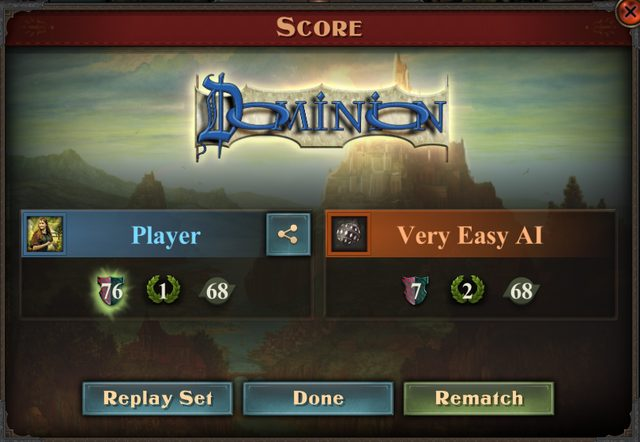

An evolved strategy plays Steam Dominion
A genetic algorithm (dominion-v1) evolved a Dominion strategy in its own simulator. Steam Dominion has no way for a bot to plug in. So this autopilot plays it the way a person does: it takes a screenshot of the game window, reads it with OCR, asks the evolved strategy what to do, and clicks. It plays whole games on its own, against the built-in computer opponents only.
Games played
3
all vs Very Easy AI
Won
3
58–8 · 76–7 · 55–35
Cards it knows
15
the base-set cards it was evolved with
Bugs found by recordings
2
upside-down Smithy · empty piles
Start here
▶ How to run itA 4-minute film: install, start a game, one command.
▶ How it worksAn 8½-minute film: every part, from the screenshot to the click.
▶ Watch a full gameGame 3 from the first turn to the score screen, sped up.
📊 StatsGames against Very Easy up to Hard AI on random base kingdoms: what it struggles with.
🎧 PodcastThree episodes: the story, the machine, and what the games taught.
The three games
| # | Kingdom | Result | Turns* | What happened |
|---|---|---|---|---|
| 1 | Chapel, Harbinger, Vassal, Workshop, Gardens, Moneylender, Remodel, Smithy, Market, Artisan | won 58–8 | 21 | The first full game. Silver, Smithy, three Golds, then Provinces. Not recorded. |
| 2 | Chapel, Moat, Harbinger, Merchant, Workshop, Gardens, Remodel, Smithy, Council Room, Witch | won 76–7 | 66 | Recorded. Smithy misread twice (upside down). Then the Duchy and Estate piles ran out and it kept clicking them: stuck at 2 Provinces from turn 25 to 52. Stopped, fixed, restarted: it noticed the empty piles at once and finished the game. |
| 3 | Vassal, Workshop, Bureaucrat, Gardens, Smithy, Throne Room, Festival, Laboratory, Mine, Witch | won 55–35 | 39 | Recorded (the full-game film). One more misread on turn 6 led to the real fix. The empty Estate pile was caught after one click. Ended on three empty piles. |
* Turns by the autopilot's own count. The opponent's score was read from the saved score screens below.

How it works, in one picture

Quick start
git clone --recurse-submodules https://github.com/JCA374/dominion-steam-autopilot
cd dominion-steam-autopilot
python3 -m venv .venv && .venv/bin/pip install -r requirements.txt
# start Dominion from Steam, begin a game against the computer, then:
.venv/bin/python autopilot/pilot.pyLinux with Steam (Proton) needed. Keep the window at its normal size and in view, and your hands off the mouse. All the details →
Honest limits
- The strategy knows 15 base-set cards. Any other kingdom card is never bought.
- Prompts it doesn't understand (choices from unknown cards) make it save a screenshot and wait for you.
- Tested on one machine and one window size (927 × 1048), against the easiest opponent.
- The evolved late game is weak in long games (Silver over Gold, buys Copper). See Lessons.
- Only against the built-in computer opponents. Never run it against people online.